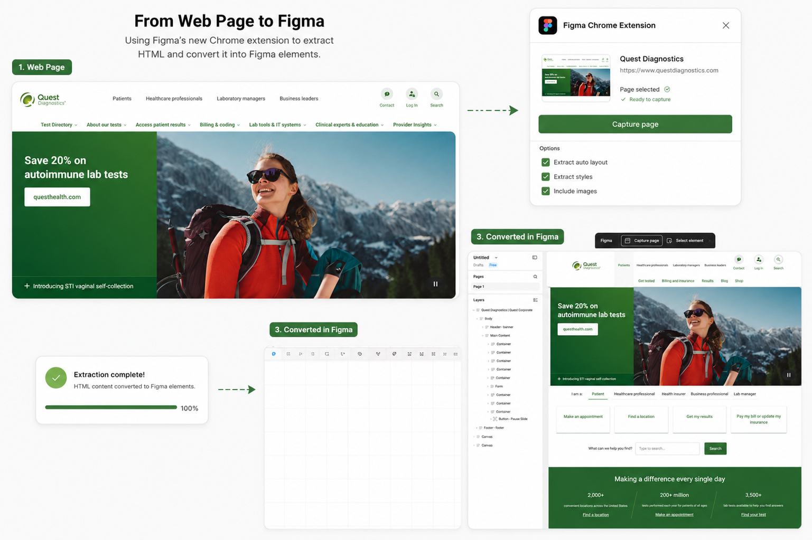
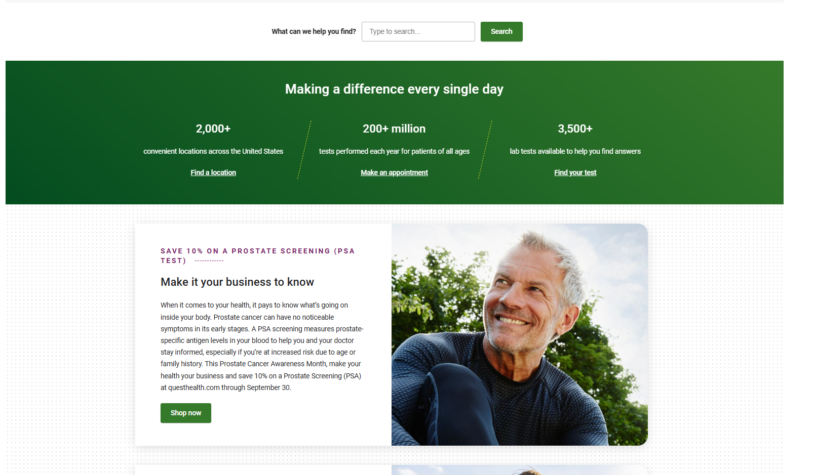
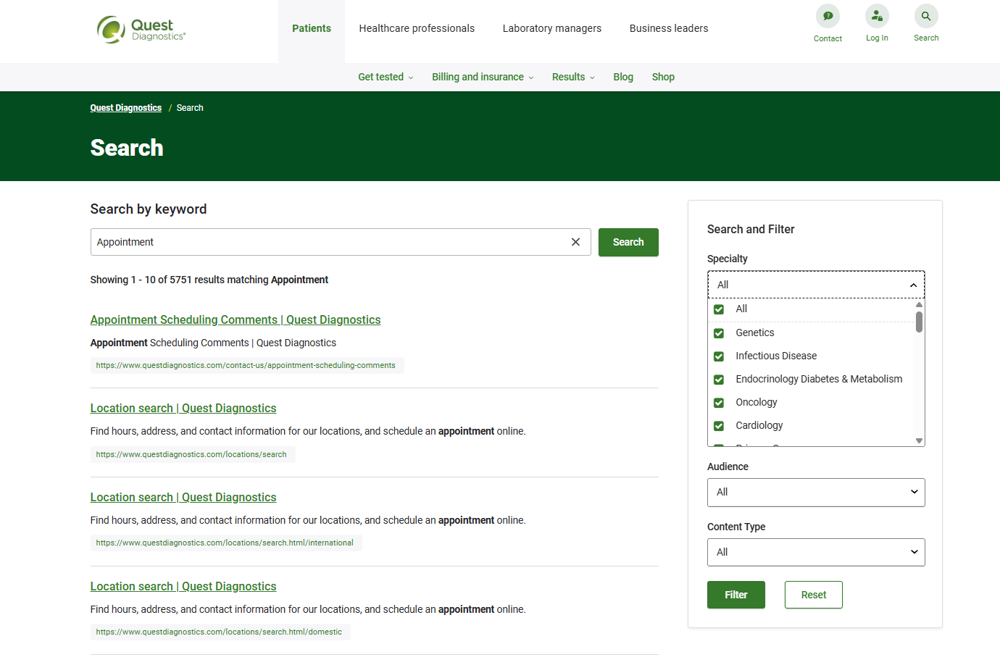
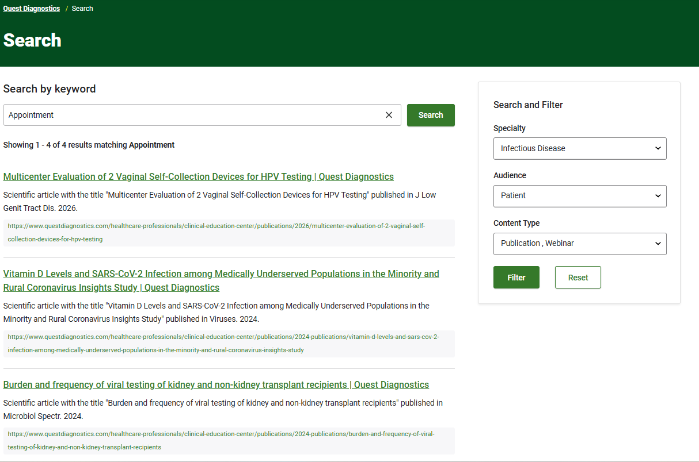
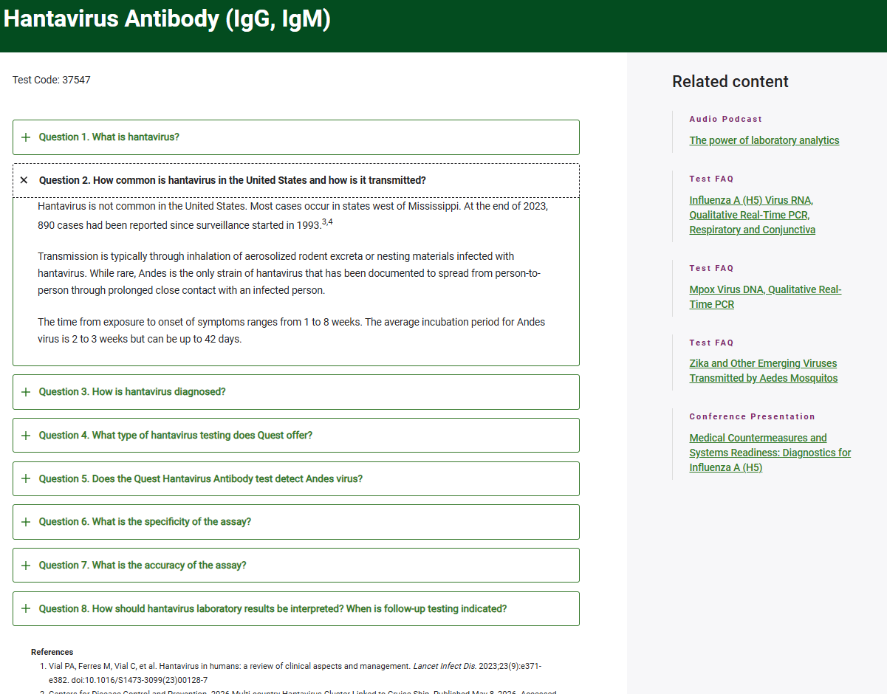
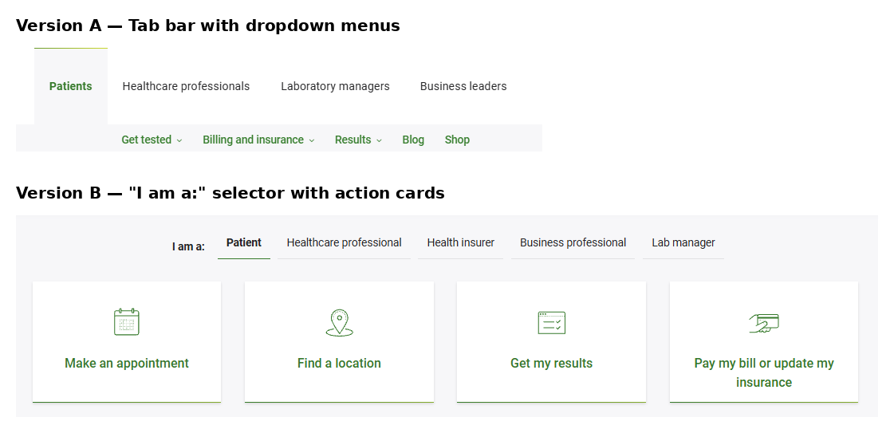

Previous Post Recap:
In my previous post, I ended by investigating both the user interface design and user experience of Quest Diagnostics.
Takeaways:
Pros:
- I admired its choice to split up use cases based on who's using the website
Cons:
- I did NOT admire its choice to add another list of use cases at the bottom of the screen that were confusingly different and similar at the same time. The user was also able to view the use cases of one role at the top and a different one at the bottom which felt a bit messy.
- I thought the size of the giant green dropdown when some use cases are selected could be reduced in size
What I'd do:
- I would make it so that one side automatically changes anytime you switch between a different role (Patients or Healthcare Workers use cases on both the top and bottom etc.) for a less confusing understanding of what choices the user can make
- I'd like to reduce the size of the dropdown boxes and make all of the information a set of links for the sake of organization and consistency
Constraints:
Unfortunately Figma only lets you extract ten web pages a month with the free tier of Figma which is what I currently have and I'll be using at least two during this time. If this blog keeps going like I hope it does, then I'll be making the jump to the Professional Plan. It's important to note that these proposed changes are only for the home screen and this is a site with dozens of different pages (once again why the Professional Plan will likely be the move going forward).
Plan:
It's time for a re-design. The reason I'm excited to dive into this isn't just because this is the exact kind of work I hope to do professionally one day but also because it's going to be my first time using Figma's new chrome extension which allows you to extract the HTML of a full web page and convert every single piece of text, box, and border into editable Figma elements which is incredibly convenient for redesigns.
I'll showcase my redesigns so that they're interactive and explain how and why I made the choices that I made. This re-design will be brief and is more of a showcase on how I utilize design thinking in order to make a current process more efficient, something that is crucial to healthcare UX.

Quick Re-design example:
In this small re-design, when a user background at the top is changed, the corresponding background at the bottom changes with it. Additionally, when you click "Billing and Coding" under "Healthcare Professionals" you can view a condensed version of the external links pop up.
Below I'd like to highlight some other positive and negative qualities I found while navigating the site and what I learned from it:

Nice Work:
The screenshot above is right below the use case part of the home page and gives users the option to search for whatever they might be looking for. I particularly like that it appears in the middle of the page because it allows the users to try and pick things up on their own first.
This is something that I find to be tricky in UX. It's kind of like a well written movie that uses the "show not tell method", essentially meaning that it trusts its audience based on what's presented to them instead of blatantly saying the themes and ideas out loud. In the case of an interface with a well designed user interface, users shouldn't need to automatically resort to a search bar but there also doesn't need to be large text and buttons that say "CLICK HERE TO FIND THIS". You'd never be able to fit all those buttons for every use case and function. It would also just look clunky and unreadable.
Hence why Quest's website reminds me of an important cornerstone of UX: Use Case Modeling.
It's very uncommon for any app, website, or piece of software to have one singular use case or purpose. The more use cases there are, the more important it is that they are cleanly organized. This goes all the way back to the empathize stage at the beginning of your design thinking process. You're designing FOR the user. The users are your stakeholders. The design choices you make impact how easily they can complete certain tasks and solve their problems.
In the case of Healthcare UX, problems are more common than just simple tasks. There are stakes involved. On the patient side, appointments might need to be made quickly because they are under a time crunch or their condition is worsening. On the provider side, they may be trying to access or upload information in a high stress environment where time is incredibly sacred. They should need to navigate through as few pages as possible and these pages should be filled with terminology that is familiar, not foreign to them.
Reviewing Quest's website reminded me how important inclusivity is when designing for multiple different audiences. You can think big and expand your scope but you still need to have a clean approach that makes the process as smooth as possible.
Once the user submits their search, they get access to literally THOUSANDS of different resources. On the side are filters that allow you to take those thousands of resources and narrow it down to exactly what you're looking for, no matter how specific.

Example: A patient is interested in reading publications on infectious diseases.
A patient, recently diagnosed with an infectious disease wants to learn more about the testing they may need to undergo. These filters allow them to instantly retrieve the resources from Quest's massive database that are relevant to their specific situation. Suddenly the options have gone from thousands to only four.

While the patient discussed above might've preferred using professional publications to learn more about their situation, maybe another patient prefers straight instant answers. This isn't just a matter of patience or short attention spans, if you're a patient that's currently suffering in some form, you might not have the mental or physical capacity to wait even a minute to gain some clarity about what you're experiencing.
If you've just learned that you have the Hantavirus, it might be scary and confusing trying to understand how that could've happened. While most websites have some form of an FAQ page, the questions are often random and generalized. In this case, the patient can get a specific and detailed answer that is only 3 sentences long. Most importantly there are even references right below to back these claims up.

Health-based content and information should be two things: CLEAR and ACCURATE. When one of these is missed, real harm can be done. It's awesome that Quest is able to inform all of their audiences accurately in a variety of ways that range from detailed and thorough to clear and succinct.
Needs work:
Lastly, I have one more critique about this site's use case modeling that I think should be improved.
A big part of my initial discussion and re-design was focused on differentiating these two separate lists of users with different use cases that appear as soon as you open the page. I also noticed that the audiences themselves aren't identical. There's 4 on the top, 5 on the bottom. Some are the same and some are not. A cleaner solution would be to narrow it down to one list and have it so that in the event there isn't enough space to include certain options, they can be featured in the green box that opens up when you pick a use case:

Conclusion:
That's all I have to say about Quest Diagnostics. While I had some critiques about use case modeling consistencies, I think that overall this is a very well designed site. I could infer that the UX team did a thorough amount of research to ensure that all of the needs of all their stakeholders were treated equally.
Digging into this portal helped me better understand how important it is to recognize the scope of your project. I'm someone who in most cases believes in a "less is more" approach so that information is communicated clearly so it is important to find a balance of keeping that as much as you can without losing sight of how big the scope might be. Even if you're dealing with a massive audience, a large database, lots of images, and use cases (last time I'll be using those words I promise) it's still possible to craft a user experience that gets the job done smoothly and seamlessly.
Quest comes out of this report looking pretty clean however next week I'm aiming to find a portal that I think is very poorly designed. This will allow me to dig even deeper into how to improve patient care workflows and create a more complex re-design in Figma. If you have any suggestions that you think are worth looking into, send me an email @dinnocente7470@gmail.com!
AI Disclosure: ChatGPT was used to create the photo collages from screenshots used in this article. All research, analysis, writing, and conclusions are my own.